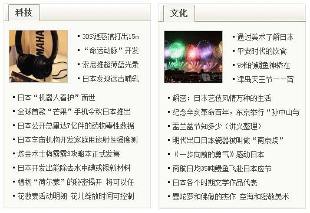
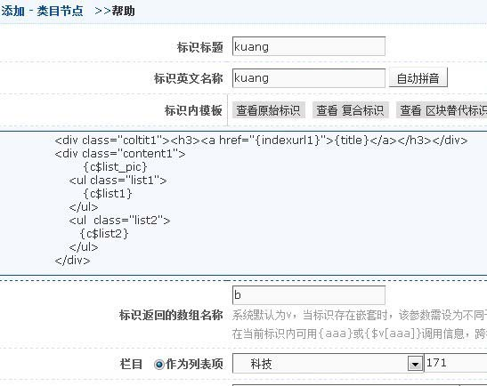
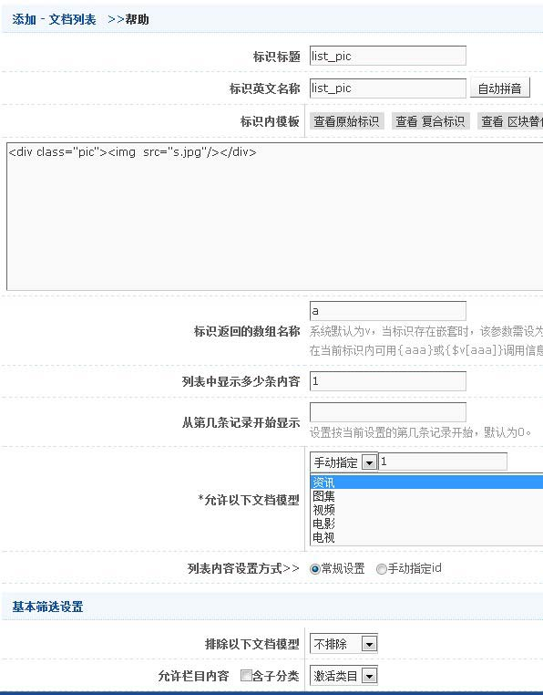
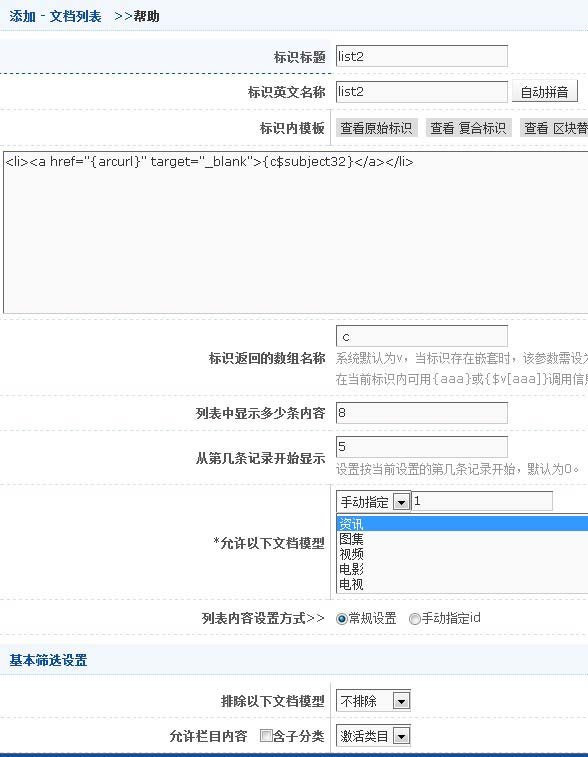
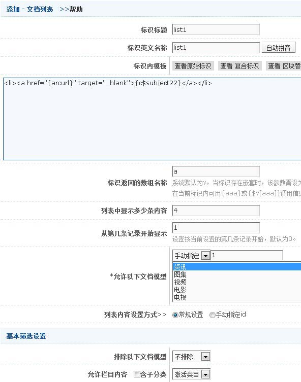
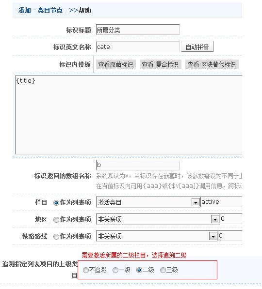

示例2
效果:

html代码:
<div class="coltit1"><h3><a href="#">科技</a></h3></div>
<div class="content1">
<div class="pic"><img src="s.jpg"/></div>
<ul class="list1">
<li><a href="#" target="_blank">标题标题标题</a></li>
<li><a href="#" target="_blank">标题标题标题</a></li>
<li><a href="#" target="_blank">标题标题标题</a></li>
<li><a href="#" target="_blank">标题标题标题</a></li>
</ul>
<ul class="list2">
<li><a href="#" target="_blank">标题标题标题</a></li>
<li><a href="#" target="_blank">标题标题标题</a></li>
<li><a href="#" target="_blank">标题标题标题</a></li>
<li><a href="#" target="_blank">标题标题标题</a></li>
<li><a href="#" target="_blank">标题标题标题</a></li>
<li><a href="#" target="_blank">标题标题标题</a></li>
<li><a href="#" target="_blank">标题标题标题</a></li>
<li><a href="#" target="_blank">标题标题标题</a></li>
</ul>
</div>
说明
具体步骤如下：
1.用类目结点做一个“外框”标识{c$kuang},设置如下图：

2.做一个“图片”标识{c$list_pic},设置如下图：

3.做一个“列表1”标识{c$list2},设置如下图：

4.做一个“列表1”标识{c$list1},设置如下图：

由于两个列表结构是一样的，可以先做一个，外面套一个类目结点，里面的列表全部激活栏目，再做“文化”区块时，只要复制科技的标识{c$kuang}就行了，然后再将复制后的标识里的栏目指向“文化”栏目就行了，这样做可以提高工作效率，也便于维护
示例3
效果:
 原html代码:
原html代码:
<li><i class="time">2010-10-10</i>栏目<a title=" " target="_blank" href="#">标题标题标题标题标题标</a></li>
<li><i class="time">2010-10-10</i>栏目<a title=" " target="_blank" href="#">标题标题标题标题标题标</a></li>
<li><i class="time">2010-10-10</i>栏目<a title=" " target="_blank" href="#">标题标题标题标题标题标</a></li>
<li><i class="time">2010-10-10</i>栏目<a title=" " target="_blank" href="#">标题标题标题标题标题标</a></li>
<li><i class="time">2010-10-10</i>栏目<a title=" " target="_blank" href="#">标题标题标题标题标题标</a></li>
标识模板(template)代码:
<li><i class="time">{c$createdate_ymd}</i>{c$cate}<a title="{subject}" href="{arcurl}">{c$subject32}</a></li>
说明：{c$createdate_ymd}是时间日期（详细可见时间日期）;{c$cate}为类目结点
{c$cate}设置如下图：
